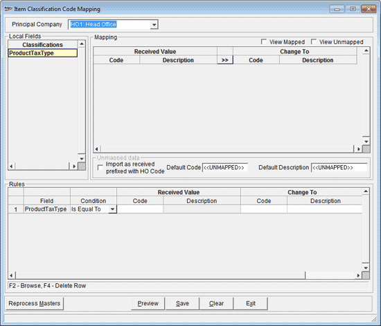

The Item Classification Code Mapping window is as shown.

Principal Company: Select the name of the principal for which classification code changes are being defined.
Local Fields: The classifications present in the outlet is displayed. Select each classification and specify the value changes.
Note: To change values under different classifications, each one need to be selected and values specified.
Mapping: Displays the vales corresponding to the selected classification. You may view only the values that are mapped, or that are unmapped or all values together.
View Mapped: Select to view the classification codes that are already mapped.
View Unmapped: Select to view the classification codes that are not mapped.
Unmapped data: You can specify the way unmapped classification codes have to be handled.
Import as received prefixed with HO Code: Select to import the values for the selected classification (prefixed with the code of HO) from the principal as is.
Default Code: The default value <<UNMAPPED>> is used for all codes in the selected classification, if you do not specify values. You may specify any constant value here for code.
Default Description: The default value <<UNMAPPED>> is used for all codes in the selected classification, if you do not specify values. You may specify any constant value here for description.
Rules: Facility to specify filter criteria to select the values to be changed.
Field: The classification selected under the Local Fields is displayed here.
Condition: Select Is Equal To, Starts With, Ends With or Contains to specify the filter criteria for selecting codes.
Received Value: Shows the code and description of the values received from the principal.
Change To: Specify the values to which the code, description or both are to be changed to.
F2: To browse and select values
F4:To delete the current filter criteria